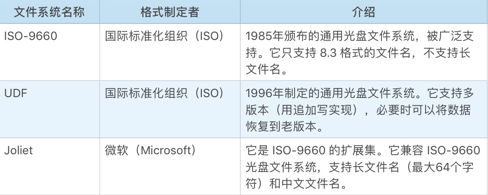
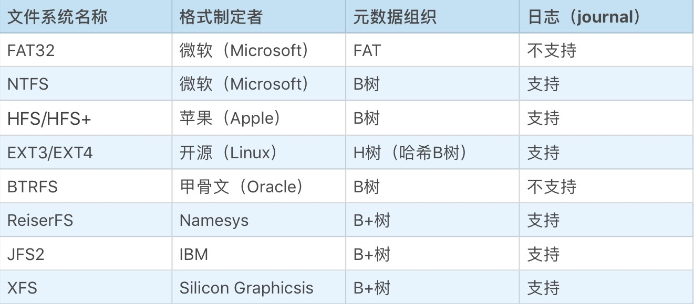

- 00 开篇词 怎样成长为优秀的软件架构师？.md.html
- 01 架构设计的宏观视角.md.html
- 02 大厦基石：无生有，有生万物.md.html
- 03 汇编：编程语言的诞生.md.html
- 04 编程语言的进化.md.html
- 05 思考题解读：如何实现可自我迭代的计算机？.md.html
- 06 操作系统进场.md.html
- 07 软件运行机制及内存管理.md.html
- 08 操作系统内核与编程接口.md.html
- 09 外存管理与文件系统.md.html
- 10 输入和输出设备：交互的演进.md.html
- 11 多任务：进程、线程与协程.md.html
- 12 进程内协同：同步、互斥与通讯.md.html
- 13 进程间的同步互斥、资源共享与通讯.md.html
- 14 IP 网络：连接世界的桥梁.md.html
- 15 可编程的互联网世界.md.html
- 16 安全管理：数字世界的守护.md.html
- 17 架构：需求分析 (上).md.html
- 18 架构：需求分析 (下) · 实战案例.md.html
- 19 基础平台篇：回顾与总结.md.html
- 20 桌面开发的宏观视角.md.html
- 21 图形界面程序的框架.md.html
- 22 桌面程序的架构建议.md.html
- 23 Web开发：浏览器、小程序与PWA.md.html
- 24 跨平台与 Web 开发的建议.md.html
- 25 桌面开发的未来.md.html
- 26 实战（一）：怎么设计一个“画图”程序？.md.html
- 27 实战（二）：怎么设计一个“画图”程序？.md.html
- 28 实战（三）：怎么设计一个“画图”程序？.md.html
- 29 实战（四）：怎么设计一个“画图”程序？.md.html
- 30 实战（五）：怎么设计一个“画图”程序？.md.html
- 31 辅助界面元素的架构设计.md.html
- 32 架构：系统的概要设计.md.html
- 33 桌面开发篇：回顾与总结.md.html
- 34 服务端开发的宏观视角.md.html
- 35 流量调度与负载均衡.md.html
- 36 业务状态与存储中间件.md.html
- 37 键值存储与数据库.md.html
- 38 文件系统与对象存储.md.html
- 39 存储与缓存.md.html
- 40 服务端的业务架构建议.md.html
- 41 实战（一）：“画图”程序后端实战.md.html
- 42 实战（二）：“画图”程序后端实战.md.html
- 43 实战（三）：“画图”程序后端实战.md.html
- 44 实战（四）：“画图”程序后端实战.md.html
- 45 架构：怎么做详细设计？.md.html
- 46 服务端开发篇：回顾与总结.md.html
- 47 服务治理的宏观视角.md.html
- 48 事务与工程：什么是工程师思维？.md.html
- 49 发布、升级与版本管理.md.html
- 50 日志、监控与报警.md.html
- 51 故障域与故障预案.md.html
- 52 故障排查与根因分析.md.html
- 53 过载保护与容量规划.md.html
- 54 业务的可支持性与持续运营.md.html
- 55 云计算、容器革命与服务端的未来.md.html
- 56 服务治理篇：回顾与总结.md.html
- 57 心性：架构师的修炼之道.md.html
- 58 如何判断架构设计的优劣？.md.html
- 59 少谈点框架，多谈点业务.md.html
- 60 架构分解：边界，不断重新审视边界.md.html
- 61 全局性功能的架构设计.md.html
- 62 重新认识开闭原则 (OCP).md.html
- 63 接口设计的准则.md.html
- 64 不断完善的架构范式.md.html
- 65 架构范式：文本处理.md.html
- 66 架构老化与重构.md.html
- 67 架构思维篇：回顾与总结.md.html
- 68 软件工程的宏观视角.md.html
- 69 团队的共识管理.md.html
- 70 怎么写设计文档？.md.html
- 71 如何阅读别人的代码？.md.html
- 72 发布单元与版本管理.md.html
- 73 软件质量管理：单元测试、持续构建与发布.md.html
- 74 开源、云服务与外包管理.md.html
- 75 软件版本迭代的规划.md.html
- 76 软件工程的未来.md.html
- 77 软件工程篇：回顾与总结.md.html
- 加餐 如何做HTTP服务的测试？.md.html
- 加餐 实战：“画图程序” 的整体架构.md.html
- 加餐 怎么保障发布的效率与质量？.md.html
- 热点观察 我看Facebook发币（上）：区块链、比特币与Libra币.md.html
- 热点观察 我看Facebook发币（下）：深入浅出理解 Libra 币.md.html
- 用户故事 站在更高的视角看架构.md.html
- 答疑解惑 想当架构师，我需要成为“全才”吗？.md.html
- 结束语 放下技术人的身段，用极限思维提升架构能力.md.html
- 课外阅读 从《孙子兵法》看底层的自然法则.md.html
- 捐赠
09 外存管理与文件系统
你好，我是七牛云许式伟。
在 “[07 | 软件运行机制及内存管理]”中，我们已经聊了内存管理，这一讲我们聊聊外置存储设备的管理。
外存的分类
计算机有非常多样化的外置存储设备，比如：磁带、光盘、硬盘、U盘、SSD 等等。外置存储设备的种类是不可穷尽的。随着科技的发展，新的存储设备会不断涌现，有着更低的单位能耗（存储量/每日能源消耗成本），更低的单位存储成本（存储量/可存储的时间/设备价格），或者更高的访问性能。
但不管这些存储设备内部如何存储数据的原理怎么变，改变的主要是质量，而不是它的功能。对操作系统来说，管理它们的方式是非常一致的。这些外置存储设备依据其功能特性不同，简单可以分为如下三类。
- 顺序读写型。如：磁带。
- 随机只读型。更准确说是单次完整写入多次读取型，也就是每次写数据都是整个存储介质一次性完整写入数据。如：光盘（含可擦写光盘）。
- 随机读写型。如：软盘、硬盘、U盘、SSD 等等。
顺序读写型的外置存储（如磁带）我们日常并不常见，它的主要应用场景是归档，也就是数据备份。今天我们略过不提。
随机只读型的外置存储（如光盘）我们日常有较多应用，常见的应用场景是资料分发和归档。资料发布的内容很广泛，比如：软件、娱乐媒体包括电影、MTV、音乐等等。
随机读写型的外置存储最为常见，我们今天在所有“能够称得上叫电脑”的设备上，无论是PC、笔记本、手机，还是手表、汽车，随处可见它们的身影。
外存的数据格式
外置存储和内存最大的区别是什么？
毫无疑问，外置存储是持久存储，它的目的是用来存储资料的。而内存是临时存储，虽然是存储，但是它实质上是为 CPU 的计算服务的。
那么，怎么让很多的软件进程同时使用这些外置存储设备，而不会乱呢？直接基于物理的存储地址进行读写肯定是行不通的，过上几个月你自己可能都不记得什么数据写到哪里了。
所以和内存管理不同，外部存储的管理，我们希望这些写到存储中的数据是“自描述”的某种数据格式，我们可以随时查看之前写了哪些内容，都什么时候写的。
这就是文件系统的来源。
文件系统把存储设备中的数据组织成为了一棵树。节点可以是目录（也叫“文件夹”），也可以是文件。
树的根节点为目录，我们叫根目录。如果是目录，那么它还可以有子节点，子节点同样可以是子目录或文件。文件则是叶节点，保存我们希望存储的资料。
每个节点，无论是目录还是文件，都有自己的名字、创建时间、最后编辑时间、最后访问时间等信息。有些文件系统还会提供最近一段时间的操作日志。这些信息有助于提醒我们有什么内容，以前都做过什么。
尽管几乎所有文件系统的接口是非常一致的，但文件系统的实现却有很多。对于随机只读型的外置存储（如光盘），常见的文件系统有如下这些。

由于这类存储设备的写特征是批量写，一次把所有的数据写完，所以它的数据格式通常偏向于读优化（存储系统一般都有读写操作，所谓读优化是指在数据结构和算法设计时尽可能考虑让读操作更高效）。整个文件系统的元数据和文件数据都会非常紧凑，比如文件数据不必支持分块等等。
对于随机读写型的存储（如硬盘），常见的文件系统有如下这些。

从文件系统格式的设计角度来说，它和架构关联性不大，更多的是数据结构与算法的问题；而且，不是基于内存的数据结构，而是基于外存的数据结构，这两者非常不同。
尽管文件系统的种类非常多，但是它们的设计思路其实基本相似。大部分现代文件系统都基于日志（journal）来改善文件系统的防灾难能力（比如突然断电，或不正常的 unmount 行为），基于 B 树或 B+ 树组织元数据。
古老的 DOS 引入的 FAT 文件系统（典型代表为 FAT32）是个例外，它直接把目录当作一个特殊的文件，里面依次列出了这个目录里的所有子节点的元信息。
这个结构简单是简单了，但是缺点非常明显，如果目录树深、目录里的子节点数量多，都会大幅降低文件系统的性能。
对于随机读写型的存储设备，操作系统往往还支持对其进行分区，尤其是在这个存储设备的容量非常大的情况下。分区是一个非常简单而容易理解的行为，本质上只是把一个存储设备模拟成多个存储设备来使用而已。
一般来说，拿到一块存储设备，我们往往第一步是对其进行分区（当然也可以省略这一步，把整个设备看做一个分区）。
第二步是对每个分区进行格式化。 所谓格式化就是给这个分区生成文件系统的初始状态。格式化最重要的是标记分区的文件系统格式（用来告诉别人这个分区是数据是怎么组织的），并且生成文件系统的根目录。
第三步是把该分区挂载（mount）到操作系统管理的文件系统名字空间中。 完成挂载后，该分区的文件系统管理程序就工作起来了，我们可以对这个文件系统进行目录和文件的读取、创建、删除、修改等操作。
外存的使用接口
怎么使用这些外置存储设备？
最简单的方式是用操作系统提供的命令行工具。例如：
- 目录相关：ls, mkdir, mv, cp, rmdir 等。
- 文件相关：cat, vi, mv, cp, rm 等。
当然，最原始的方式还是我们上一讲介绍的 “系统调用”。但大部分编程语言对此都有相应的封装，例如 Go 语言中的相关功能如下所示。
- 目录相关：os.Mkdir, os.Rename, os.Remove 等。
- 文件相关：os.Open/Create/OpenFile, os.Rename, os.Remove 等。
有意思的是，在早期，操作系统试图将所有的输入输出设备的接口都统一以 “文件” 来抽象它。
最典型的代表就是标准输入（stdin）和标准输出（stdout）这两个虚拟的文件，分别代表了键盘和显示器。在 UNIX 系里面有个 “一切皆文件” 的口号，便由此而来。
但事实证明 UNIX 错了。输入输出设备太多样化了，所谓的 “一切皆文件” 不过是象牙塔式的理想。就拿键盘和显示器来说，图形界面时代到来，所谓标准输入和标准输出就被推翻了，编程接口产生颠覆性的变化。
有了文件系统的使用接口，进程就可以互不影响地去使用这些外置存储设备。除非这些进程要操作的文件或目录的路径产生冲突（所谓路径，是指从根目录到该节点的访问序列。例如路径 /a/b/c 是从根目录访问子目录a，再访问子子目录b，最后访问节点c），一般情况下它们并不需要感知到其他进程的存在。
路径冲突是可以避免的，只要我们对路径取名进行一些基础的名字空间约定，但有时候也会故意利用这种路径的冲突，来实现进程间的通讯。
操作系统提供了一些冲突检查的机制。例如 “检查文件是否存在，不存在就创建它”，这个语义在保证原子性的前提下，就可以用于做进程间的互斥。例如，我们希望一个软件不要运行多个进程实例，就可以基于这个机制来实现。
虚拟内存的支持
前面我们在 “[07 | 软件运行机制及内存管理]” 一讲中提到，在物理内存不足的时候，操作系统会利用外存把一些很久没有使用的内存页的数据，保存到外存以进行淘汰。
在 UNIX 系的操作系统中，操作系统为此分配了一个磁盘分区叫 swap 分区，专门用于内存页的保存和恢复。在 Windows 操作系统中则通过一个具有隐藏属性的 .swp 文件来实现。
在缺页发生比较频繁时，内存页的数据经常性发生保存和恢复，这会发生大量的磁盘 IO 操作，非常占用 CPU 时间，这时候我们通常能够非常明显感觉到计算机变得很慢。
在计算机变慢，并且计算机的硬盘灯不停闪烁的时候，我们基本可以确定是物理内存严重不足，不能满足运行中的软件的内存需要。
结语
回顾一下我们今天的内容。整体来说，外存管理从架构角度来说比较简单，复杂性主要集中在外存数据格式，也就是文件系统的设计上。
文件系统的实现非常多。如果你希望进一步研究某个文件系统的具体实现细节，我这里推荐一个由七牛云开源的 BPL 语言（Binary Processing Language，二进制处理语言）。地址如下：
顾名思义，BPL 语言主要用于分析二进制数据格式。应用场景包括：文件格式分析（含磁盘分区格式，因为一个磁盘分区可以把它理解为一个大文件）、网络协议分析。
我们在后面的介绍文本处理相关的章节，还会专门拿出 BPL 语言进行讨论。
如果你对今天的内容有什么思考与解读，欢迎给我留言，我们一起讨论。如果你觉得有所收获，也欢迎把文章分享给你的朋友。感谢你的收听，我们下期再见。
© 2019 - 2023 Liangliang Lee. Powered by gin and hexo-theme-book.